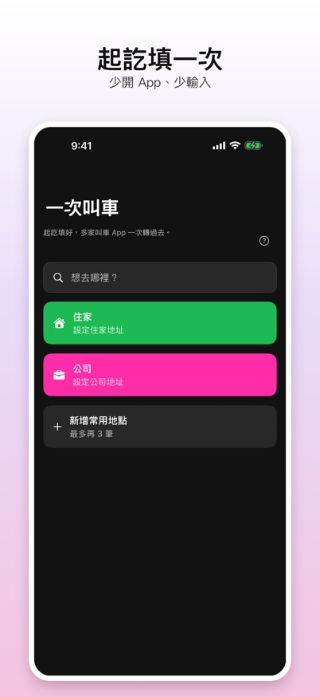
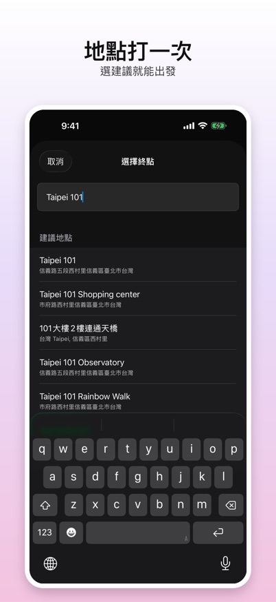
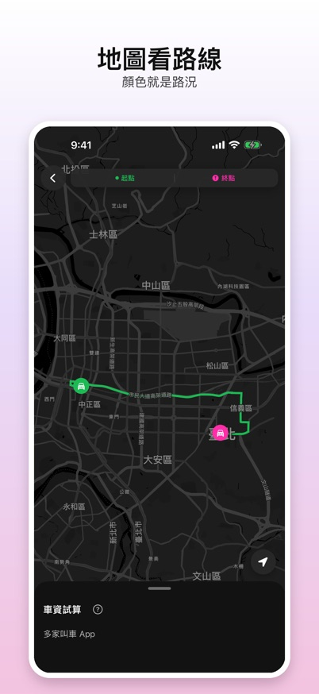
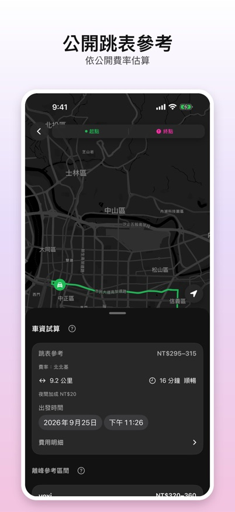
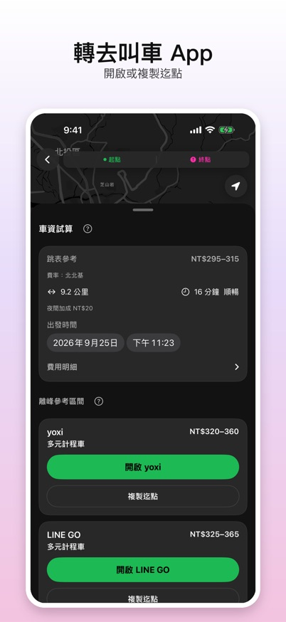

起訖填一次，看路線與小黃跳表參考，再轉去各家叫車 App。
一次叫車不是叫車平台，是獨立的試算與導流工具。它幫你少開幾個 App、少打幾次地址：在這裡輸入一次起點與迄點，就能開啟你常用的叫車 App。
支援的叫車 App
- yoxi
- LINE GO
- Bolt
- 台灣大車隊 55688
- Uber
一次叫車與上述平台沒有合作或代表關係。實際車資、優惠與是否叫得到車，都以各平台 App 為準。
操作說明
首頁
可存住家、公司等常用地點。點搜尋列或捷徑開始規劃行程。

填起點與迄點
起點可用目前位置，迄點輸入地名或地址。最近搜尋會留在這台手機，可隨時清除。

看路線
地圖顯示開車路線與路況，綠色順暢、黃色車多、紅色壅塞。

小黃跳表參考
依各縣市公告費率估算小黃車資，含延滯與夜間加成；出發時間可調整。尚未核對公告的縣市會用已核縣市的中位數並加註記。這是參考，實際以車上跳表為準。

開啟叫車 App
點平台卡片即開啟該 App。Uber 可帶入起訖；其他 App 開啟後，用「複製迄點」貼到目的地欄。沒安裝的 App 會轉到 App Store。
離峰時卡片顯示依跳表推估的參考區間；尖峰或路況延滯偏高時不顯示區間，請到該 App 看實價。

每日次數
新路線試算與新地點搜尋各有每日免費次數，隔天重置。用完時可觀看廣告增加次數；已搜尋過的地點可直接從最近搜尋選用。
服務範圍
預估車資目前支援台灣，含澎湖、金門、馬祖。
Enter pickup and drop-off once, see the route and a meter-taxi reference, then open your ride app.
RideOnce is not a ride-hailing service; it is an independent estimate and handoff tool. It saves you from typing the same addresses into several apps: enter both ends once, then open the ride app you use.
Supported ride apps
- yoxi
- LINE GO
- Bolt
- Taiwan Taxi 55688
- Uber
RideOnce is not affiliated with these providers. Fares, promos, and availability are shown only in each provider’s app.
User guide
Screenshots are from the Traditional Chinese version.
Home
Save places such as home and work. Tap the search bar or a shortcut to plan a trip.
Set pickup and drop-off
Pickup can use your current location. Type a place name or address for drop-off. Recent searches stay on this phone and can be cleared anytime.
See the route
The map shows the driving route and traffic: green is light, yellow is busy, red is heavy.
Meter-taxi reference
Estimated from each county’s published meter rates, including slow-traffic time and night surcharges; you can change the departure time. Counties without a verified tariff use the median of verified counties, with a note. It is a reference; the meter in the taxi is authoritative.
Open a ride app
Tap a provider card to open its app. Uber can prefill both ends; for the others, use “Copy drop-off” and paste it into the destination field. If an app is not installed, the App Store opens.
Off-peak, cards show a range estimated from the meter. At peak times or in heavy delay the range is hidden; check the app for the real fare.
Daily limits
New route estimates and new place searches each have a free daily allowance that resets the next day. When one runs out, you can watch an ad for more tries, or pick a place you already searched from Recent searches.
Coverage
Fare estimates are available in Taiwan, including Penghu, Kinmen, and Matsu.